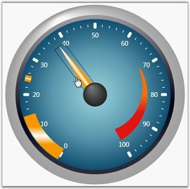

Essential Gauge WPF has both the pointer cap and the pointers to show the values over the scale. The pointer cap can be endlessly customized using the various in-built properties. Some of the major properties are listed below.
Table 9: Property Table
|
Property |
Description |
|
BackgroundBrush |
To set the Background brush for the pointer cap. Default value is Transparent. |
|
BorderBrush |
To set the Border brush for the pointer cap. Default value is Transparent. |
|
BorderWidth |
To set the Border width of the pointer cap. Default value is set to 0. |
|
PointerCapRadius |
The radius of the pointer cap can be customized using this property. Default value is set to 0. |
|
CapOnTop |
To bring pointer cap to front from pointer. Default value is true. |
|
PointerCapType |
To set the appearance of the indicators. The options included are as follows.
Default Custom |
|
PointerCapCustomGeometry |
Displays the pointer cap in the shape specified by a custom Geometry.
Note that the custom shape will be set, if and only if, the PointerCapType property is set to Custom. |
|
EnablePointerInteraction |
Using this property, the Circular Pointer's position can be changed dynamically using the keyboard or mouse. |
|
PointerNeedleType |
Sets the pointer needle type. Default value is Needle. |
PointerNeedleType—To set the pointer needle type. It has three types. They are as follows.
· Needle
· Marker
· Bar
The types listed above are considered as the shapes of the Pointers. They have broad classifications of types. Needle can be customized using the NeedleStyle property; following are the in-built styles available for the NeedleStyle property.
The styles are listed below.
· Arrow
· Rectangle
· Trapezoid
· Triangle
Marker can be customized using the MarkerStyle property; following are the in-built styles available for the MarkerStyle property.
· Diamond
· Ellipse
· Pentagon
· Rectangle
· Trapezoid
· Triangle
Pointer Placement
Pointer can be placed in the below three positions as per the user requirements.
· Cross—draw on the middle of the scale.
· Inside—draw on the inside of the scale.
· Outside—draw on the outside of the scale.
Refer to the following code example for setting these properties.
|
[XAML]
<my:CircularGauge Name="circularGauge1" > <my:CircularGauge.Scales> <my:CircularScale BorderWidth="3" GapSweepAngle="300" MajorIntervalValue="10" Maximum="100" Minimum="0" MinorIntervalValue="2" Radius="120" ScaleBarSize="10" ShadowOffset="0" StartAngle="120" ScaleDirection=" CounterClockwise"> <my:CircularScale.Pointers> <my:CircularPointer BorderWidth="0.3" HorizontalAlignment="Right" PointerNeedleType="Bar" PointerLength="100" PointerPlacement="Outside" PointerWidth="20" Name="barpointer"/> <my:CircularPointer BorderWidth="0.3" HorizontalAlignment="Right" PointerLength="100" PointerPlacement="Outside" PointerWidth="20" /> <my:CircularPointer BorderWidth="0.3" HorizontalAlignment="Right" PointerNeedleType="Marker" PointerLength="10" PointerPlacement="Cross" PointerWidth="10" /> </my:CircularScale.Pointers> <my:CircularScale.PointerCap> <my:PointerCap CapOnTop="True" PointerCapRadius="10" PointerCapType="Default" Width="20" /> </my:CircularScale.PointerCap> </my:CircularScale> </my:CircularGauge.Scales> </my:CircularGauge> |
|
[C#]
private CircularScale m_scale; m_scale = new CircularScale(); m_scale.ShadowOffset = 1; m_scale.Minimum = 0; m_scale.Maximum = 100; m_scale.MinorIntervalValue = 2; m_scale.MajorIntervalValue = 10; m_scale.StartAngle = 120; m_scale.GapSweepAngle = 300; m_scale.ScaleBarSize = 5; m_scale.Radius = 95; m_scale.BorderWidth = 1.2; m_scale.BorderBrush = Brushes.PeachPuff; m_scale.BackgroundBrush = Brushes.Plum; this.circularGauge1.Scales.Add(m_scale);
// Adding Pointer Cap. m_scale.PointerCap.PointerCapRadius = 7; m_scale.PointerCap.BackgroundBrush = Brushes.Yellow;
// Adding Pointer. CircularPointer pointer1 = new CircularPointer(); pointer1.BackgroundBrush = Brushes.Black; pointer1.BorderBrush = Brushes.Gray; pointer1.PointerLength = 100; pointer1.PointerWidth = 10; pointer1.EnablePointerInteraction = true; pointer1.PointerPlacement = ScalePlacement.Outside;
m_scale.Pointers.Add(pointer1); |
Output of the above settings will be something similar to the below image.

Figure 34: Circular Pointer Interaction
 Note: We should have the scales added to the
gauge. Only then we can add the pointer and the pointer cap to the Circular
Gauge.
Note: We should have the scales added to the
gauge. Only then we can add the pointer and the pointer cap to the Circular
Gauge.
See Also
Circular Gauge, Circular Label Tick, Circular Mark Tick, Circular Range